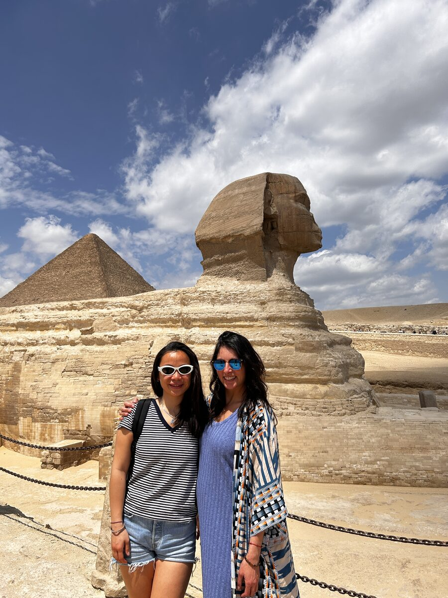
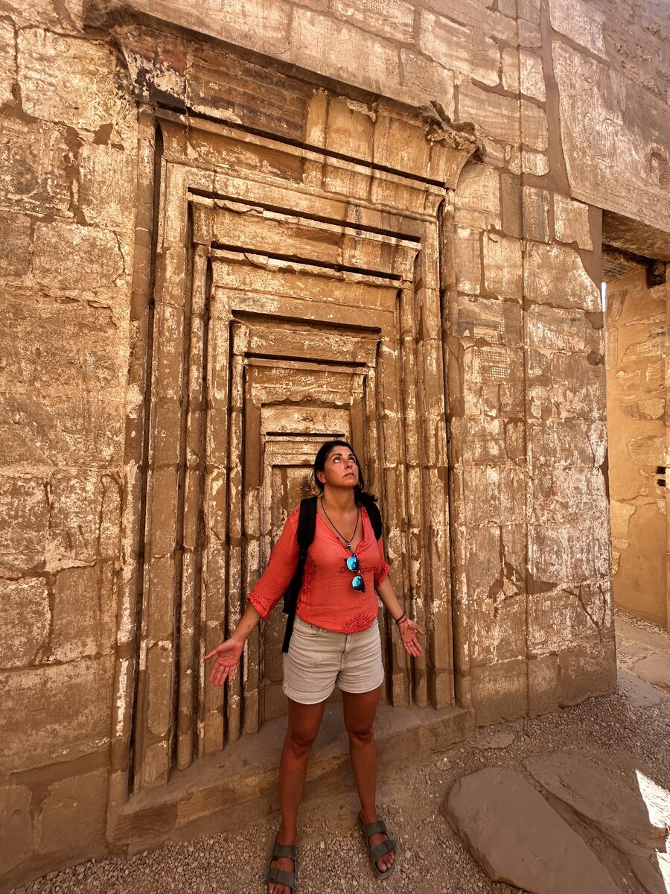
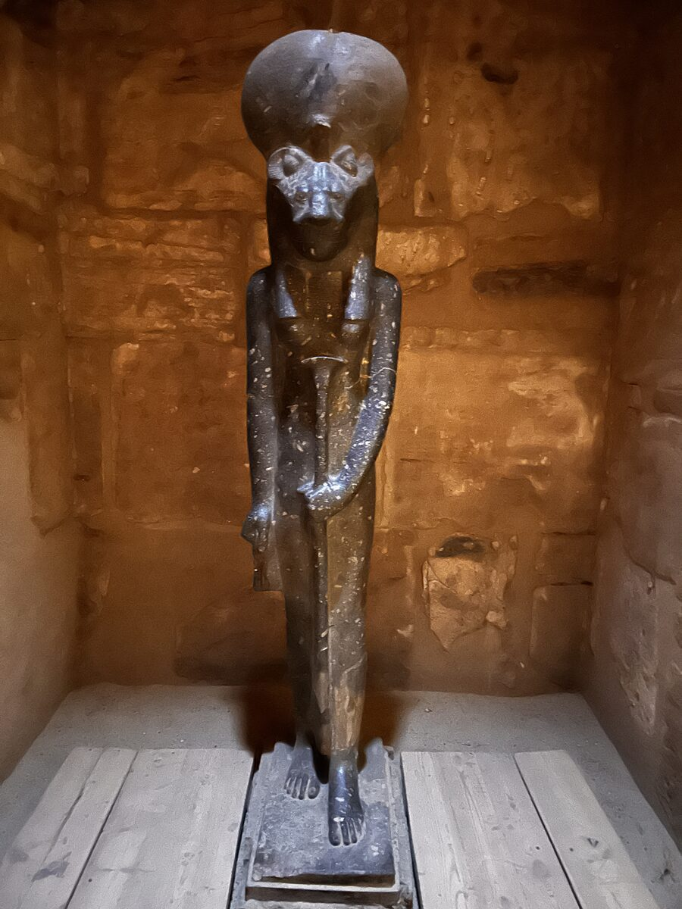

Entre dos mundos
Volví a Egipto para bucear.
Era mi segundo viaje al país, pero esta vez el verdadero destino estaba bajo el agua.
El mar Rojo tiene algo difícil de explicar. En la superficie todo parece seco, árido, casi inmóvil. Y basta con sumergirse unos metros para descubrir un mundo completamente distinto: jardines de coral, peces de colores imposibles y una vida que aparece por todas partes.
Arriba, el desierto.
Abajo, una explosión de vida.
Quizá por eso me resulta tan fascinante.
Porque te recuerda que lo que vemos nunca es todo lo que existe.
Durante varios días mi mundo se redujo a algo muy sencillo: respirar, descender y observar.
Bajo el agua no hay conversaciones pendientes, teléfonos ni listas de cosas que hacer. Solo está el sonido de tu propia respiración y esa sensación extraña de estar visitando un lugar al que no perteneces.
Bucear siempre me devuelve al presente.
No puedes adelantarte.
No puedes distraerte.
Tienes que estar ahí.
Atenta a tu cuerpo, al aire que queda en la botella, a quien bucea a tu lado y a todo lo que se mueve alrededor.
Tal vez por eso, después de pasar tantos días bajo el mar, llegué a tierra especialmente abierta.
Y Egipto empezó a hablarme desde otro lugar.

No recuerdo aquel viaje como una sucesión de monumentos. Recuerdo sensaciones.
La inmensidad.
El silencio.
La fuerza de algunos espacios.
La impresión de caminar por lugares construidos hacía miles de años y sentir que todavía conservaban algo imposible de nombrar.
Palabras en el cuaderno
En mi cuaderno aparecen palabras repetidas:
Potente.
Energía.
Renacer.
Señales.
No estaba intentando demostrar nada. Solo quería dejar constancia de lo que estaba sintiendo para no olvidarlo al volver a casa.
Hubo un lugar donde sentí una fuerza muy intensa en las palmas de las manos. En otro, una presión extraña a la altura del plexo solar. Escuché hablar de templos concebidos como mapas del alma y de espacios que representaban las distintas etapas de transformación del ser humano.

La entrada.
El ascenso.
La purificación.
El silencio.
La visión interior.
La unión.
El renacimiento.
No sé cuánto pertenecía a la historia, cuánto a la interpretación de nuestro guía y cuánto a mi propia manera de vivirlo.
Pero algo de todo aquello me atravesó.
En una de las páginas escribí:
Morir conscientemente para renacer con poder divino.
Y justo debajo aparecieron tres preguntas:
¿Quién eres?
¿A qué has venido?
¿Has conocido el sabor de tu verdad?
No recuerdo haber encontrado ninguna respuesta definitiva.
Quizá porque los viajes importantes no vienen a responder nuestras preguntas.
Vienen a formularlas mejor.
Uno de los días lo bauticé en mi diario como el día de las señales. Todo parecía estar conectado: las palabras del guía, los símbolos, las coincidencias y las sensaciones que iban apareciendo en mi cuerpo.

Tal vez solo estaba más receptiva.
Tal vez, después de tantos días respirando lentamente bajo el agua, había aprendido también a escuchar de otra manera en la superficie.
Eso es lo que recuerdo de mi segundo viaje a Egipto.
No una lista de lugares.
Recuerdo haberme movido constantemente entre dos mundos.
Entre la superficie y las profundidades.
Entre la piedra y el agua.
Entre lo visible y todo aquello que, aunque no sepamos explicarlo, también podemos sentir.
Volví para sumergirme en el mar Rojo.
Y terminé sumergiéndome un poco más dentro de mí.